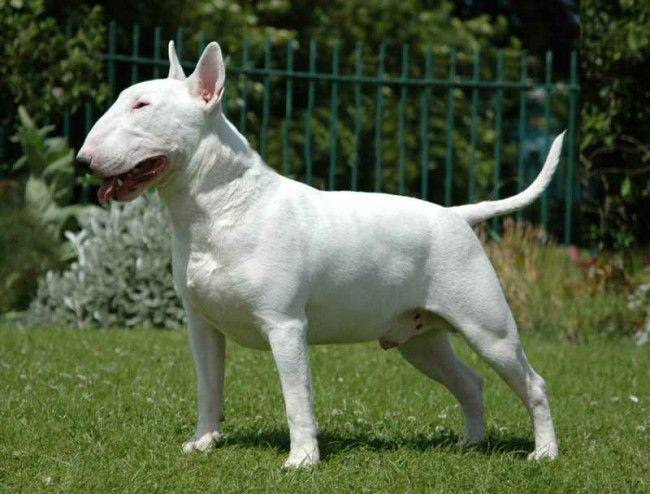

Бультерьер

Происхождение: Англия
Размер: Средние (рост: 45–55 см, вес: 22–38 кг)
Характер: Энергичные, упрямые, игривые
Особенности: Уникальная яйцевидная форма головы. Могут быть агрессивны к другим собакам. Подходят для активных владельцев
Здоровье: Проблемы с кожей, глухота